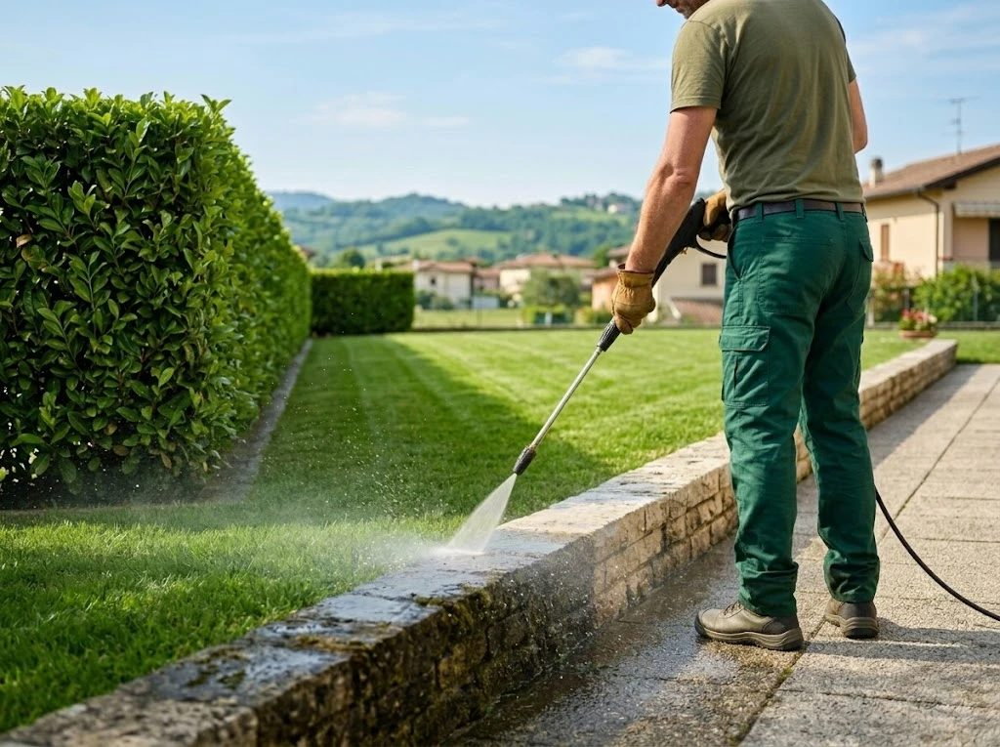

Potatura siepi
Linee dritte, forme pulite, altezza sotto controllo.
- Siepi basse e medio-alte
- Potatura di contenimento e di forma
- Raccolta e smaltimento dei rami
Giardiniere a Vicenza e provincia
Taglio l'erba del tuo giardino e del tuo prato, le tue siepi ed effettuo lavaggi di marciapiedi e muretti con idropulitrice. Lavoro preciso, puntuale e con pulizia finale inclusa, il tutto a un prezzo onesto.

Servizi
Tre servizi, fatti bene. Per case private, condomini, attività e seconde case.
Linee dritte, forme pulite, altezza sotto controllo.
Sfalcio di giardini privati, prati grandi e aree verdi. Rifinitura dei bordi con decespugliatore lungo muri, aiuole e recinzioni.
Pulizia profonda di marciapiedi, muretti, vialetti, cortili, terrazzi e recinzioni. Via muschio, alghe, smog e macchie nere.
Come lavoro
Mandami una foto e l'indirizzo su WhatsApp o compila il modulo. Bastano 2 minuti.
Entro 24 ore ti mando un prezzo chiaro. Per lavori grandi vengo a vedere, gratis.
Arrivo nel giorno concordato, eseguo il lavoro e porto via tutti gli scarti.
Perché scegliermi
Quando chiami, parli con me. Conosco il tuo giardino, so come vuoi la siepe e quando serve il prossimo taglio. Niente call center, niente squadre diverse ogni volta.
Zone servite
Lavoro a Vicenza città e nei comuni della provincia. Il tuo comune non è in elenco? Scrivimi lo stesso.
Domande frequenti
Lavoro in tutta la provincia di Vicenza.
Sì. Mandami una foto del giardino, della siepe o della superficie da lavare e ti rispondo con un preventivo gratuito entro 24 ore. Per lavori più grandi faccio un sopralluogo senza costi.
Sì. Raccolgo erba, foglie e rami e li smaltisco. Lascio il giardino pulito e in ordine.
Da aprile a giugno il prato cresce in fretta: un taglio ogni 7-10 giorni lo mantiene fitto e sano. In estate e in autunno basta un taglio ogni 2-3 settimane. Puoi scegliere un abbonamento stagionale.
Il periodo migliore è fine primavera e fine estate. Per lauro, photinia e ligustro consiglio due tagli all'anno, così la siepe resta compatta e non si svuota alla base.
No, se usata bene. Regolo pressione e ugello in base al materiale: cemento, pietra, porfido, autobloccanti o intonaco. Rimuovo muschio, alghe e sporco senza danneggiare la superficie.
Contatti
Compila il modulo: si apre WhatsApp con il messaggio già pronto. Aggiungi una foto e invia. Ti rispondo entro 24 ore.